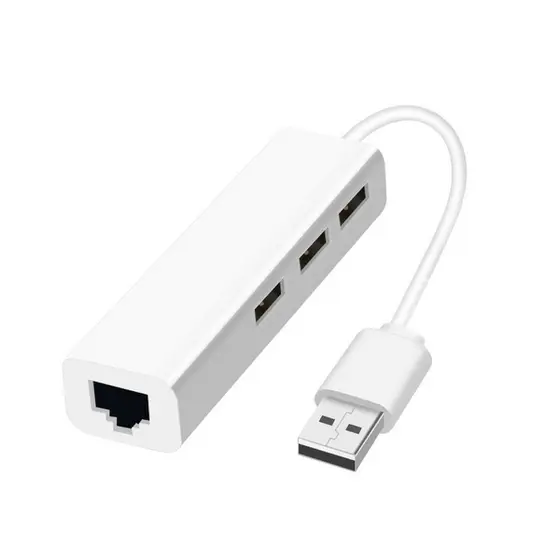
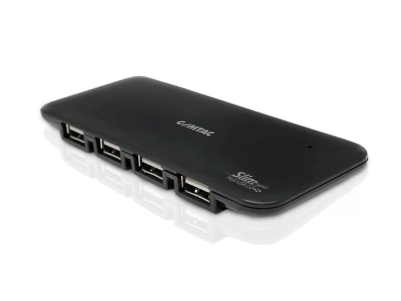

Hub
Hub, também conhecido como concentrador, é um equipamento utilizado na área da informática para realizar a conexão de computadores de uma rede e possibilitar a transmissão de informações entre essas máquinas. Esse termo também é utilizado em rádio e telecomunicações, sendo que na televisão aberta e no rádio ele refere-se a transmissão e difusão de determinada informação, tendo como característica principal a transmissão para muitos receptores ao mesmo tempo.
O hub é um dos primeiros aparelhos utilizados por empresas que desejavam trocar informações dentro de uma rede local. Ele é ligado em redes LAN, MAN, WAN e TAN e possuem um endereço de IP para permitir que as informações trafeguem por meio dessas conexões. O padrão utilizado para isso é o RFC (Request For Comments).
 Uma das aplicações do hub é no controle de tráfego de dados de várias redes. Quando um computador ligado à rede transmite informações para o hub, é necessário que ele esteja desocupado, pois, caso contrário, o pacote de dados é retornado ao computador requisitante com um pedido de espera, até que a transmissão de informações que está sendo realizada pelo hub termine. Esse é o grande ponto fraco do hub, pois além de não conseguir repassar vários pacotes de dados de uma só vez, ele as endereça para todas as máquinas interligadas, gerando um sério problema de segurança.
A forma de trabalho do hub é mais fácil se comparada a do switch e roteador. Nele existem várias portas para que sejam conectados os cabos de rede de cada computador. Na maioria dos modelos, há entre 8 a 32 portas para conexão, variando de acordo com o fabricante e o modelo. O aparelho ainda permite que seja adicionado a ele outro hub para aumentar a quantidade de portas disponíveis.
Ainda que a sua maneira de trabalhar seja obsoleta e haja perigos decorrentes de sua utilização, os hubs são utilizados em várias residências e em pequenas redes. Para que ele possa funcionar sem grandes problemas, é ideal que esteja conectado um mínimo possível de máquinas.